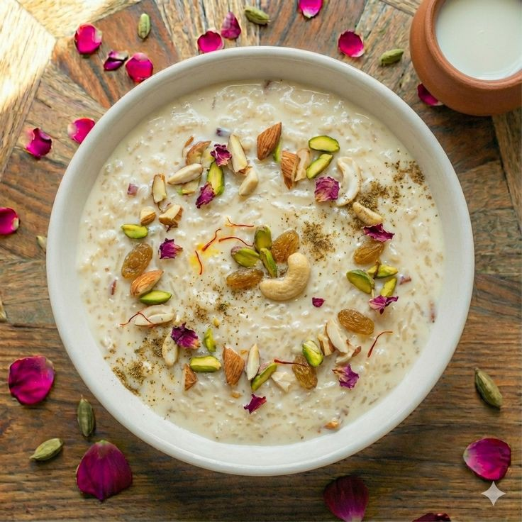
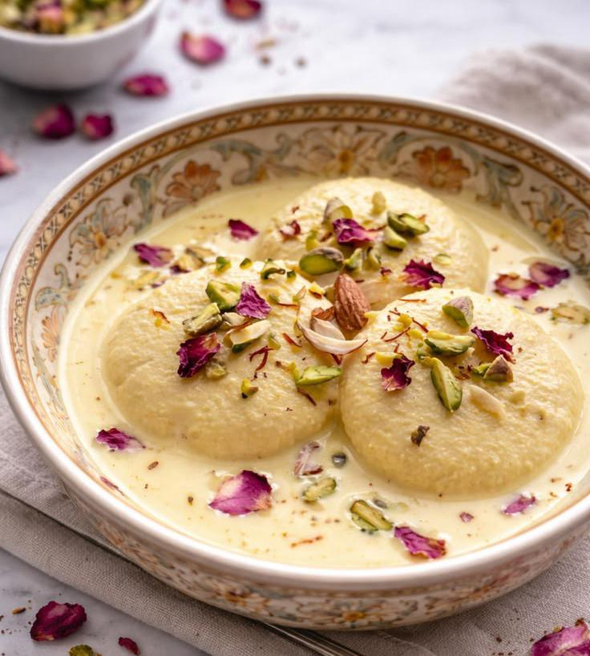
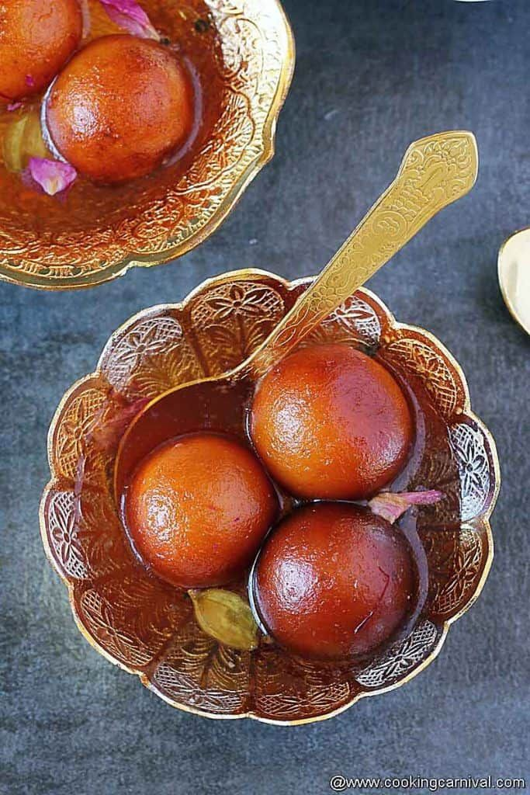
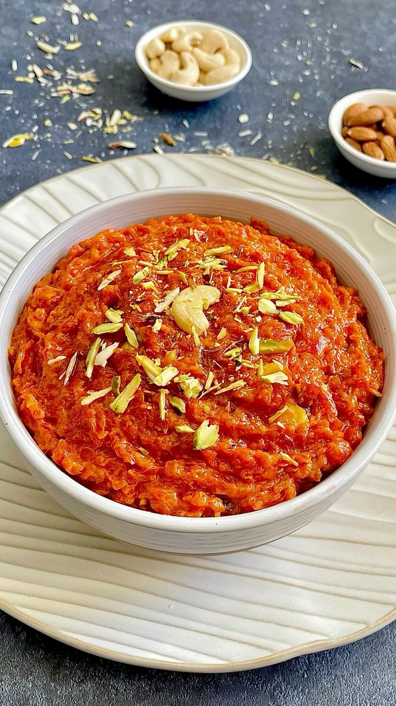
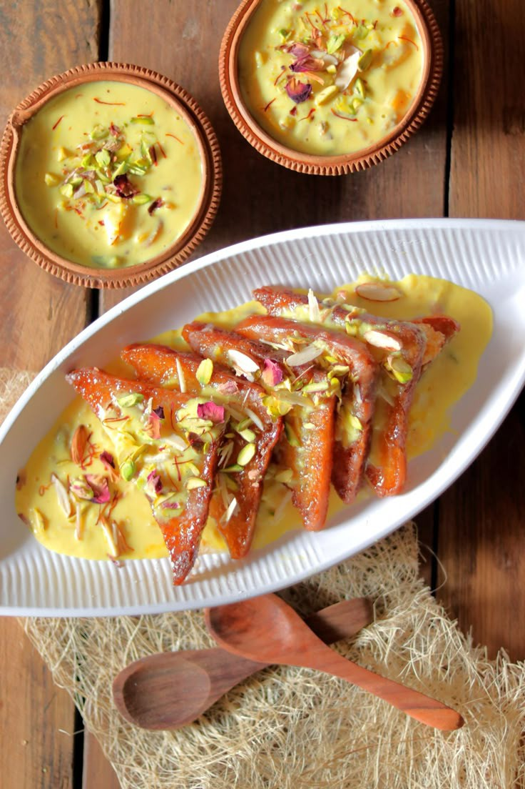
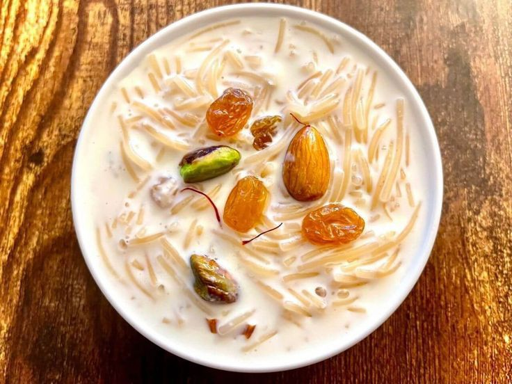
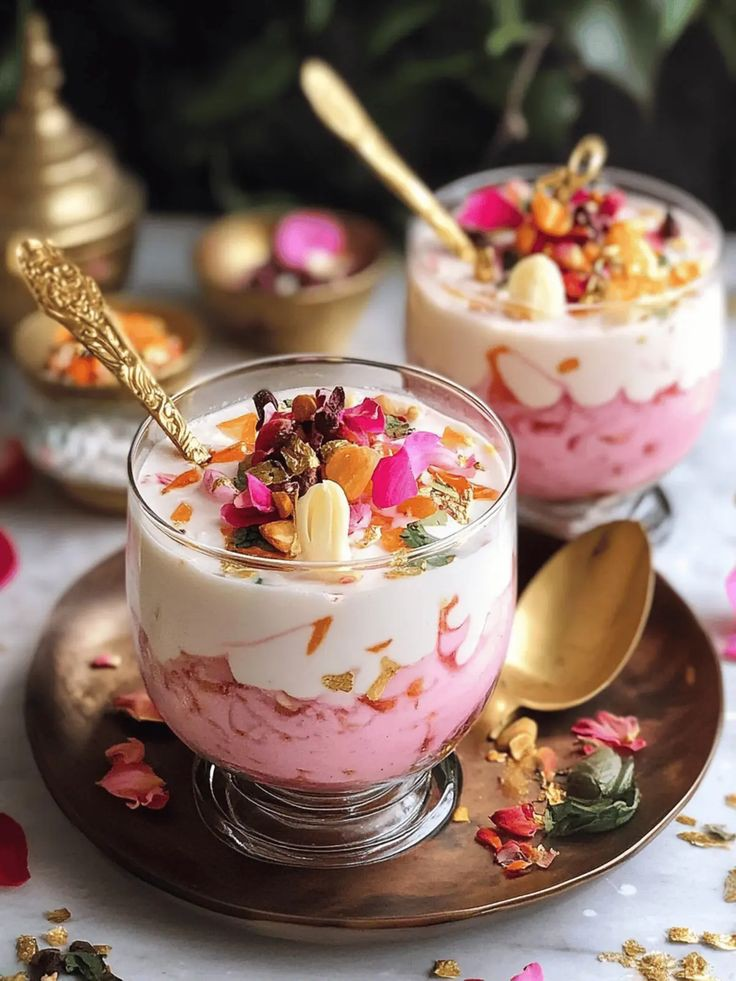
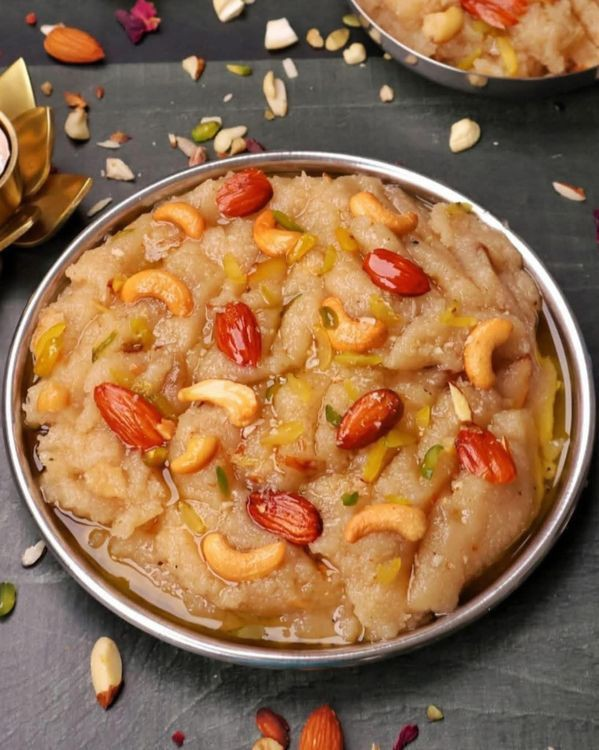
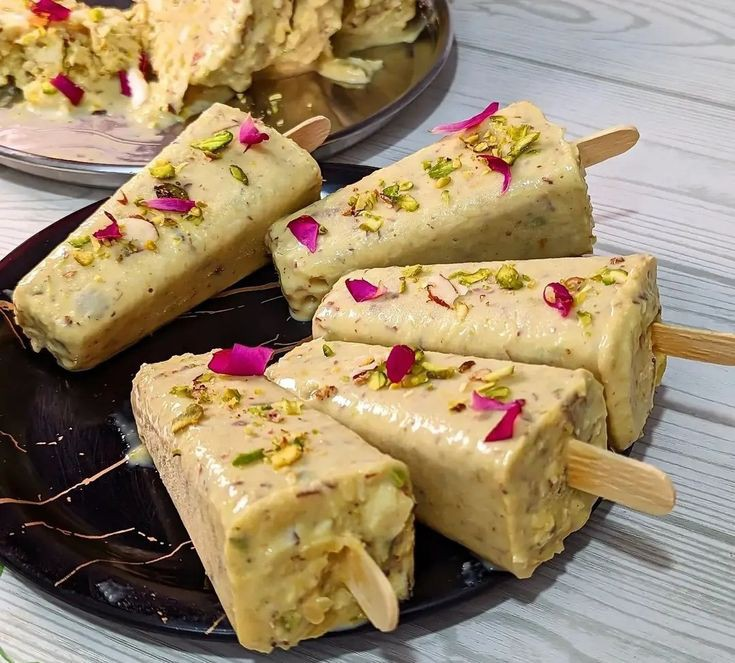

Milk BasedKheer (Rice Pudding)
Slow-cooked creamy rice pudding made with full-fat milk, sugar, and cardamom — garnished with slivered almonds and served chilled or warm.
Traditional sweets for celebrations
Hot halwa and kheer for cold nights
Crowd-pleasing sweets for gatherings
Ready in 30 minutes or less

The queen of Pakistani desserts. Melt-in-your-mouth soft paneer dumplings soaked in chilled, saffron-infused sweetened milk and garnished with crushed pistachios.
8 authentic Pakistani sweet dishes to satisfy every craving

Milk BasedSlow-cooked creamy rice pudding made with full-fat milk, sugar, and cardamom — garnished with slivered almonds and served chilled or warm.

FriedSoft, deep-fried milk-solid dumplings soaked in fragrant rose and cardamom sugar syrup. A must-have at every Pakistani celebration and Eid feast.

Milk BasedGrated red carrots slow-cooked in full-fat milk, ghee, and sugar until rich and fudgy — finished with khoya and garnished with pistachios and almonds.

Eid SpecialGolden fried bread slices soaked in rich sweetened milk infused with saffron, cardamom, and rose water — a Mughal-inspired royal dessert.

Eid SpecialToasted vermicelli cooked in sweetened milk with cardamom and garnished with dry fruits — the iconic dessert served on the morning of Eid ul Fitr.

Cold DessertA refreshing cold dessert layered with rose syrup, soaked basil seeds, vermicelli, chilled milk, and a scoop of kulfi or ice cream.

QuickSmooth, golden semolina halwa roasted in ghee and cooked with sugar syrup until perfectly thick — ready in under 30 minutes.

Cold DessertPakistan's traditional frozen dairy dessert made from slowly reduced full-fat milk, sugar, cardamom, and crushed pistachios. Denser than ice cream.
Traditional Pakistani sweets worth knowing about

A dense milk-based fudge flavoured with cardamom and garnished with edible silver leaf — a staple at every Pakistani wedding and celebration.

Crispy, pretzel-shaped deep-fried batter soaked in warm sugar syrup — best enjoyed with doodh pati chai on a cold morning.

The pride of Multan — a hard, brittle sweet made from wheat starch, ghee, sugar, and saffron, loaded with whole almonds and pistachios.

Round, melt-in-your-mouth chickpea flour sweet balls roasted in ghee with cardamom and sugar — a beloved homemade mithai.
Secrets to making perfect Pakistani sweets every time
For kheer, ras malai, and shahi tukray — full-fat milk is non-negotiable. It creates the rich, creamy texture that makes Pakistani milk-based desserts so indulgent.
For halwa, always roast suji in ghee on low heat until golden and fragrant before adding water or milk. This removes the raw taste completely.
Milk-based desserts like kheer, ras malai, and falooda taste dramatically better when chilled for at least 2 hours — the flavours deepen and texture sets perfectly.